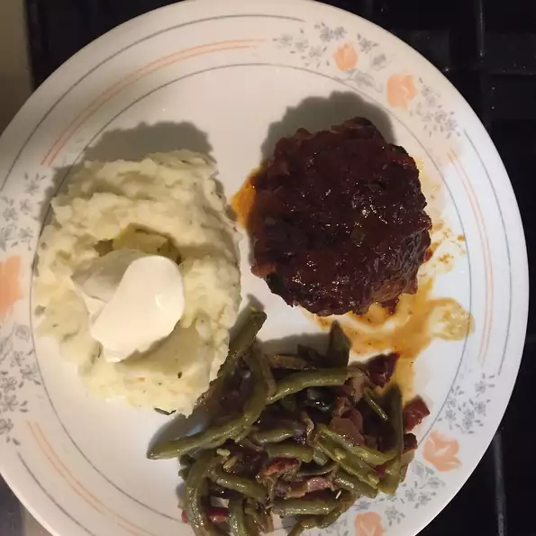

Michael's Chicken

Baked barbeque-style chicken. Great with mashed potatoes using the sauce from the chicken.
Ingredients
- ¾ cup cider vinegar
- ¼ cup chili sauce
- ¼ cup Worcestershire sauce
- 1 (6 ounce) can tomato paste
- 1½ cup diced onion
- 2 tablespoons brown sugar
- ½ teaspoon cayenne pepper
- 2 tablespoons vegetable oil
- 8 chicken thighs
Steps
- Preheat oven to 350 degrees F (175 degrees C).
- In a medium saucepan over medium heat, blend cider vinegar, chili sauce, Worcestershire sauce, and tomato paste. Mix in the onion, brown sugar, and cayenne pepper.
- Heat oil in a medium skillet over medium heat, and saute the chicken thighs until browned. Remove from heat, drain, and arrange in a medium baking dish. Cover with the cider vinegar sauce mixture.
- Bake covered 45 minutes in the preheated oven, or until chicken is no longer pink and juices run clear.